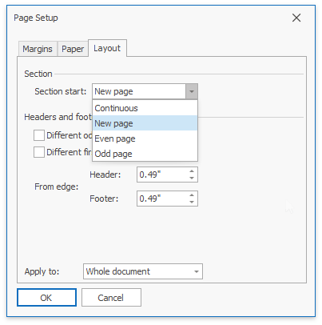

Divide a Documents into Sections
You can divide your document into sections to specify parts of a document that have different page settings (page margins, page orientation, paper size), column layouts, line numbering and headers and footers.
Insert Section Breaks
To divide a document into sections, insert section breaks.
- Click where you want to inset a section break within a document.
On the Page Layout tab, in the Page Setup group, click the Breaks button and select one of the following types of section breaks.

- Column - starts a new section on the next column on the page.
- Next Page - inserts a section break and starts a new section on the next page.
- Continuous - starts the new section on the same page.
- Even Page - inserts a section break and starts a new section on the next even-numbered page.
- Odd Page - inserts a section break and starts a new section on the next odd-numbered page.
To show the section break mark, press CTRL+SHIFT+8 or on the Home tab, in the Paragraph group, click the Show/Hide Paragraph button.

In a document, section breaks are marked as illustrated below.

Change Section Break Type
You can change the type of the section break that has been inserted to start a section. To do this, follow the instructions below.
- Click the section following the section break that you wish to change.
Invoke the Page Setup dialog by clicking the dialog box launcher.

Change the Section start property on the Layout tab as required.

Section Protection
You can protect/unprotect certain sections in your document.
In the UI, do the following to protect/unprotect sections:
- Click Protect Document on the Review ribbon tab to open the Document Protection dialog.
- In the invoked dialog, set the document protection type to Filling in Forms (allows users to fill in forms and form fields).
Select sections to be protected. When the section checkbox is selected, you can modify text only in form fields in this section.